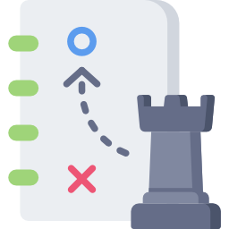

Strategy Guide
Study
Chess is an academic game. You can only get so far on raw skill; you must begin to study at some point if you want to truly advance your game. Listed below are a variety of resources to get you started!
 Read
Read
A large part of studying is reading what the experts have to say. Books are a great way to compact the teachings of past chess masters into one written resource. The list below is divided into the skill levels of beginner, intermediate, and advanced, each focusing on a specific aspect of chess, such as openings, endgames, tactics, and positional strategy.
Watch
Watching chess can be broken up into two parts: watching advanced players, and reviewing your own games. Just as professional sports players do, watching masterful examples of your craft as well as reviewing your own performance can greatly advcance your skill level. Displayed below is a live blitz game being played by IM's or GM's.
Play!
And of course, one can only truly become better by doing! There are a variety of ways to play chess online, such as Chess.com, Lichess, The Internet Chess Club, and more! Hosted below is an embedded version of Lichess for you to play now!
Recommended Websites:
- Chess.com
- Chess Talk
- The Chess Website
- The Chess Website (Youtube Channel)
- Chess Fort
- Chessable
- List of Chess Resources
Recommended Books:
Beginner
- Basics: Pandolfini's Ultimate Guide to Chess
- Tactics: Bobby Fischer Teaches Chess
- Tactics: Winning Chess
- Opening Concepts: Discover Chess Openings
- Endgame Basics: Pandolfini's Endgame Course
- Endgame Basics: Endgame Workshop
- List of Chess Resources